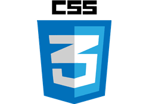
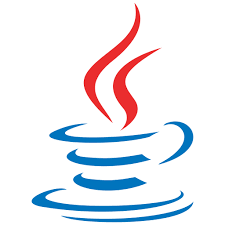

Perfil README de GitHub
Creación de un perfil profesional en GitHub usando Markdown para presentarme como developer.
Ingeniero en informatica
Email: correototalmentereal@gmail.com
Telefono: +569 72384321
Dirección: Los satelites #1234, Marte
Github: https://github.com/cristophercontrerasinformatica-dev
Ingeniero en Informática junior con sólidos conocimientos en desarrollo de software y bases de datos. Destaco por mi resolución de problemas y trabajo en equipo en entornos tecnológicos dinámicos. Orientado a aportar soluciones eficientes e innovadoras, con interés en seguir creciendo profesionalmente en el área IT




Creación de un perfil profesional en GitHub usando Markdown para presentarme como developer.
Desarrollo de una página básica aplicando estructura HTML5 y etiquetas semánticas.
Desarrollo de una página básica aplicando estructura HTML5 y etiquetas semánticas.
| Idioma | Nivel |
|---|---|
| Español | Nativo |
| Inglés | B1 |